Autonomous driving and safety
Vikas Dhiman
Assistant Professor at the University of Maine
Assistant Professor at the University of Maine
Robotics and Learning
Self-driving cars
Google trends for 'Self-driving cars'
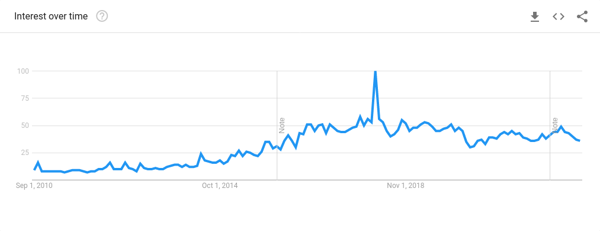Lessons from aerospace
150 deaths per 10 billion miles
0.2 deaths per 10 billion miles
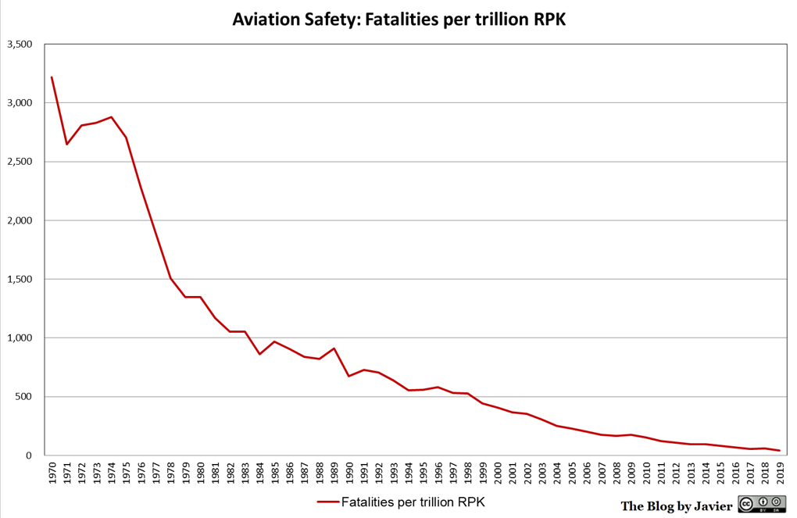
Artificial Intelligence
| 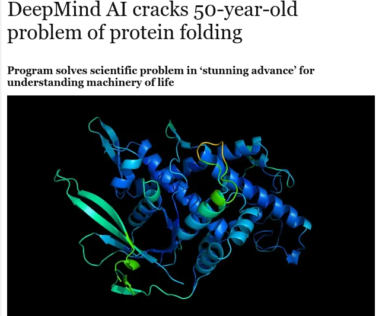 |
| 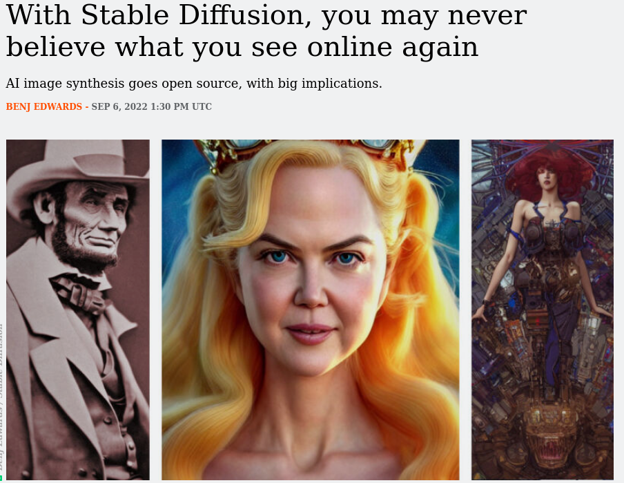 |
Why?
Bias-Variance trade-off

Bayesian Learning
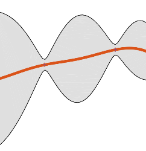 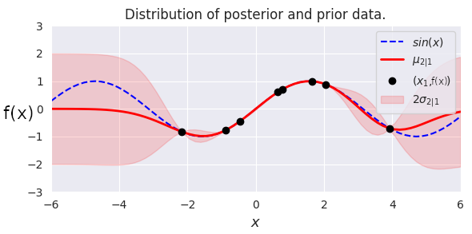How to handle uncertainty safely?
My research area
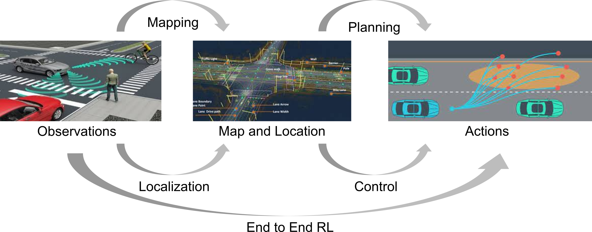My Background
Safety
Safe control while learning
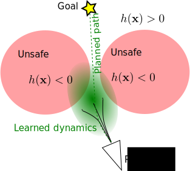
Given:
- Map and localization
- Desired trajectory as a plan
- Unsafe regions
Problem 1:
- Learn uncertainty aware robot system dynamics
Problem 2:
- Follow trajectory avoiding unsafe actions
How to learn dynamics?
-
Maximum Likelihood models.
- Koopman operators ( Mamakoukas et al (2020) )
- Model based reinforcement Learning ( Wang et al (2019) )
-
Bayesian methods
- Ensemble neural networks ( Pearce et al (2018) )
- Dropout neural networks ( Gal and Ghahramani (2016) )
- Probabilistic Backpropagation ( Hernández-Lobato and Adams (2015) )
- Gaussian Processes (Rasmussen (2003))
Gaussian Processes
|
|
|
Problem formulation
-
\begin{align} \min_{\bfu \in \mathcal{U}}& \text{ Cost function } \\ \qquad\text{s.t.}&~~\bbP\bigl( \text{ Safety constraint } \bigr) \ge 1-\epsilon, \end{align}
Problem 1
- \begin{align} \dot{\bfx} = F(\bfx) \ctrlaff \end{align}
- \[ \vect(F(\bfx)) \sim \GP(\vect(\bfM_0(.)), \bfK_0(.,.)) \]
- \[\StDat_{1:k} \triangleq [\bfx(t_1), \dots, \bfx(t_k)]\]
- \[\bfU_{1:k} \triangleq [\bfu(t_1), \dots, \bfu(t_k)]\]
- \[ \StDtDat_{1:k} \triangleq [\dot{\bfx}(t_1), \dots, \dot{\bfx}(t_k)] \]
-
Compute the posterior distribution \(\calG\calP(\vect(\bfM_k(\bfx)), \bfK_k(\bfx,\bfx'))\) of \(\vect(F(\bfx)) \mid (\StDat_{1:k}, \bfU_{1:k}, \StDtDat_{1:k})\).
Control Barrier Functions
-
For differentiable \( h(\bfx) \),
safe set is \( \calC = \{ \bfx \in \calX : h(\bfx) > 0 \} \) - Assume \( \grad_\bfx h(\bfx) \ne 0 \quad \forall x \in \partial \calC \)
- Assume system starts in safe state \( \bfx(0) \in \calC \)
-
System stays safe iff
\[ \dot{h}(\bfx) \ge - \gamma h(\bfx) \] - Ames et al (ECC 2019): \begin{multline} \text{ System stays safe } \Leftrightarrow~~\exists~\bfu = \pi(\bfx)~~\text{s.t.}\\ \mbox{CBC}(\bfx,\bfu) := [\grad_\bfx h(\bfx)]^\top F(\bfx)\ctrlaff + \gamma h(\bfx) \ge 0 \;~ \forall \bfx \in \calX. \end{multline}
Problem 2
- \begin{align} \dot{\bfx} = F(\bfx) \ctrlaff \end{align}
- \[ \vect(F(\bfx)) \sim \GP(\vect(\bfM_k(.)), \bfK_k(.,.)) \]
-
Find \(\bfu_k\) and \(\tau_k\) such that for \(\bfu(t) = \bfu_k\) \[ \mathbb{P}(\mbox{CBC}(\bfx(t),\bfu_k) \ge 0) \ge p_k \] for all \( t \in [t_k,t_k+\tau_k) \)
Approach
- Estimate posterior distribution over \(F(\bfx)\)
- Propagate uncertainty to the Safety condition.
- Extension to continuous time using Lipschitz continuity assumptions.
- Extension to higher relative degree systems.
\[
\vect(F(\bfx)) \sim \GP(\vect(\bfM_0(.)), \bfK_0(.,.))
\]
Decoupled GPs: Learn each element of \(F(\bfx)\) independently:
\[
\bfK_0(\bfx, \bfx') = \diag([\kappa(\bfx, \bfx'), \dots ])
\]
No correlation across dimensions, training data still correlated.
Corregionalization models: Alvarez et al (FTML 2012):
\[
\bfK_0(\bfx, \bfx') = \kappa(\bfx, \bfx') \boldsymbol{\Sigma}
\]
\(\Sigma \in \R^{n(1+m) \times (1+m)n}\) has too many parameters to learn
Matrix Variate Gaussian: Inspired from Sun et al (AISTATS 2017)
\[
F \sim \mathcal{MVG}(\bfM, \bfA, \bfB) \Leftrightarrow
\vect(F) \sim \calN(\vect(M), \bfB \otimes \bfA)
\]
\[
\bfK_0(\bfx, \bfx') = \bfB_0(\bfx, \bfx') \otimes \bfA
\]
Factorization assumption:
\[
\vect(F(\bfx)) \sim \GP(\vect(\bfM_0(.)), \bfB_0(.,.) \otimes \bfA)
\]
Matrix variate Gaussian Process
\(
\newcommand{\prl}[1]{\left(#1\right)}
\newcommand{\brl}[1]{\left[#1\right]}
\newcommand{\crl}[1]{\left\{#1\right\}}
\)
\begin{equation}
\begin{aligned}
\vect(F(\bfx)) &\sim \mathcal{GP}(\vect(\bfM_0(\bfx)), \bfB_0(\bfx,\bfx') \otimes \bfA)
%F(\bfx)\underline{\bfu} &\sim \mathcal{GP}(\bfM_0(\bfx)\underline{\bfu}, \underline{\bfu}^\top \bfB_0(\bfx,\bfx') \underline{\bfu}' \otimes \bfA)
\end{aligned}
\end{equation}
Given data \(\StDat_{1:k}\),
\(\StDtDat_{1:k} \),
and \( \underline{\boldsymbol{\mathcal{U}}}_{1:k} \).
\begin{equation*}
\newcommand{\ubcalU}{\underline{\boldsymbol{\calU}}}
\newcommand{\bcalM}{\boldsymbol{\calM}}
\newcommand{\bcalB}{\boldsymbol{\calB}}
\newcommand{\bcalC}{\boldsymbol{\calC}}
\begin{aligned}
&\bfM_k(\bfx) \triangleq \bfM_0(\bfx) +
\left( \dot{\bfX}_{1:k} - \bcalM_{1:k}\ubcalU_{1:k}\right) \left(\ubcalU_{1:k}\bcalB_{1:k}(\bfx)\right)^\dagger
\\
&\bfB_k(\bfx,\bfx') \triangleq \bfB_0(\bfx,\bfx')
-
\bcalB_{1:k}(\bfx)\ubcalU_{1:k} \left(\ubcalU_{1:k}\bcalB_{1:k}(\bfx')\right)^\dagger
\\
&\left(\ubcalU_{1:k}\bcalB_{1:k}(\bfx)\right)^\dagger
\triangleq
\left(\ubcalU_{1:k}^\top\bcalB_{1:k}^{1:k}\ubcalU_{1:k} + \sigma^2 \bfI_k\right)^{-1}\ubcalU_{1:k}^\top\bcalB_{1:k}^\top(\bfx).
\label{eq:mvg-posterior}
\end{aligned}
\end{equation*}
Inference on MVGP:
\begin{align}
\vect(F_k(\bfx_*)) &\sim
\mathcal{GP}(\vect(\bfM_k(\bfx_*)), \; \bfB_k(\bfx_*,\bfx_*') \otimes \bfA).
\\
F_k(\bfx_*)\underline{\bfu}_* &\sim
\mathcal{GP}(\bfM_k(\bfx_*)\underline{\bfu}_*, \;
\underline{\bfu}_*^\top\bfB_k(\bfx_*,\bfx_*')\underline{\bfu}_*\otimes\bfA).
\end{align}
Learning Experiments

- \begin{align} \begin{bmatrix} \dot{\theta} \\ \dot{\omega} \end{bmatrix} = \underbrace{\begin{bmatrix} \omega \\ -\frac{g}{l} \sin(\theta) \end{bmatrix}}_{f(\bfx)} + \underbrace{\begin{bmatrix} 0 \\ \frac{1}{ml} \end{bmatrix}}_{g(\bfx)} u \end{align}
Learning Experiments
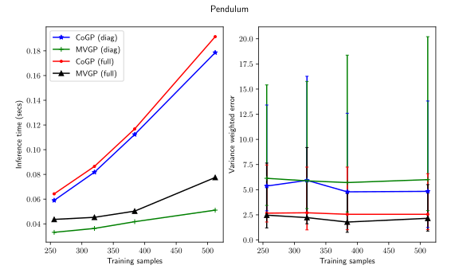Approach
- Estimate \(F(\bfx)\) with Matrix-Variate Gaussian Process
- Propagate uncertainty to the Safety condition
- Extension to continuous time using Lipschitz continuity assumptions.
- Extension to higher relative degree systems.
Uncertainty propagation to CBC
- \[ \mbox{CBC}(\bfx, \bfu)= \grad_\bfx h(\bfx)F_k(\bfx)\ctrlaff + \alpha(h(\bfx)) \]
- Recall: \begin{equation} F_k(\bfx_*)\underline{\bfu}_* \sim \mathcal{GP}(\bfM_k(\bfx_*)\underline{\bfu}_*, \underline{\bfu}_*^\top\bfB_k(\bfx_*,\bfx_*')\underline{\bfu}_*\otimes\bfA). \end{equation}
- Lemma : \[ \mbox{CBC}(\bfx, \bfu) \sim \GP(\E[\mbox{CBC}], \Var(\mbox{CBC})) \] \begin{align} \label{eq:parametofpi5543} \E[\mbox{CBC}_k](\bfx, \bfu) &= \nabla_\bfx h(\bfx)^\top \bfM_k(\bfx)\underline{\bfu} + \alpha(h(\bfx)),\\ \Var[\mbox{CBC}_k](\bfx, \bfx'; \bfu) &= \underline{\bfu}^\top\bfB_k(\bfx,\bfx')\underline{\bfu} \nabla_\bfx h(\bfx)^{\top}\bfA\nabla_\bfx h(\bfx') \end{align} Note: mean and variance are Affine and Quadratic in \( \bfu \) respectively.
Deterministic condition for controller
-
\begin{align} \min_{\bfu_k \in \mathcal{U}}& \text{ Cost function } \\ \qquad\text{s.t.}&~~\bbP\bigl( \text{ Safety constraint } \mid \bfx_k,\bfu_k \bigr) \ge 1-\epsilon, \end{align}\begin{align} \min_{\bfu_k \in \mathcal{U}}& \text{ Quadratic cost function } \\ \qquad\text{s.t.}&~~\bbP\bigl( \style{color:red}{\mbox{CBC}(\bfx_k, \bfu_k) > \zeta > 0} \mid \bfx_k,\bfu_k \bigr) \ge 1-\epsilon, \end{align}
- Safe controller (an SOCP): \begin{align} \min_{\bfu_k \in \mathcal{U}}& \text{ Quadratic cost function } \\ \qquad\text{s.t.}\qquad& \cssId{highlight-current-red-1}{\class{fragment}{ \E[\CBC] - \zeta \ge \sqrt{2\Var(\CBC)(\erf^{-1}(2\epsilon-1))^2} }} \end{align}
Approach
- Estimate \(F(\bfx)\) with Matrix-Variate Gaussian Process
- Propagate uncertainty to the Control Barrier condition.
- Extension to continuous time using Lipschitz continuity assumptions.
- Extension to higher relative degree systems.
Safety beyond triggering times
- So far: \begin{align} \min_{\bfu_k \in \mathcal{U}}& \|\bfR(\bfx) (\bfu_k - \pi_\epsilon(\bfx_k) \|_2^2 \\ \qquad\text{s.t.}&~~ \bbP\bigl( \mbox{CBC}(\style{color:red}{\bfx_k}, \bfu_k) > \style{color:red}{\zeta} \mid \bfx_k,\bfu_k \bigr) \ge \style{color:red}{1-\epsilon}, \end{align}
- Next: \begin{align} \min_{\bfu_k \in \mathcal{U}}& \|\bfR(\bfx) (\bfu_k - \pi_\epsilon(\bfx_k) \|_2^2 \\ \qquad\text{s.t.}&~~ \bbP\bigl( \mbox{CBC}(\style{color:red}{\bfx(t)}, \bfu_k) > \style{color:red}{0} \mid \bfx_k,\bfu_k \bigr) \ge \style{color:red}{p_k}, \qquad \style{color:red}{\forall t \in [t_k, t_k + \tau_k)} \end{align}
Safety beyond triggering times
- Assume Lipschitz continuity of dynamics: \begin{align} \textstyle \label{eq:smoth23} \bbP\left( \sup_{s \in [0, \tau_k)}\|F(\bfx(t_k+s))\ctrlaff_k -F(\bfx(t_k))\ctrlaff_k\| \le L_k \|\bfx(t_k+s)-\bfx_k\| \right) \ge q_k:=1-e^{-b_kL_k}. \end{align}
- Assume Lipschitz continuity of \( \alpha(h(\bfx)) \): \begin{align} \label{htym6!7uytf} |\alpha \circ h(\bfx(t_k+s))-\alpha \circ h(\bfx_k)| \le L_{\alpha \circ h} \|\bfx(t_k+s)-\bfx_k\|. \end{align}
- \[ \sup_{s \in [0, \tau_k)} \| \grad_\bfx h(x(t_k + s)) \| \le \chi_k \]
Theorem:
\[
\bbP\bigl(
\mbox{CBC}(\bfx_k, \bfu_k) > \zeta
\mid \bfx_k,\bfu_k
\bigr) \ge 1-\epsilon
\quad\Rightarrow\quad
\bbP\bigl(
\mbox{CBC}(\bfx(t), \bfu_k) > 0
\mid \bfx_k,\bfu_k
\bigr) \ge p_k, \;
\forall t \in [t_k, t_k + \tau_k)
\]
holds with \( p_k = 1-\epsilon q_k \) and
\(
\tau_k \le \frac{1}{L_k}\ln\left(1+\frac{L_k\zeta}{(\chi_kL_k+L_{\alpha \circ h})\|\dot{\bfx}_k\|}\right)
\)
Approach
- Estimate \(F(\bfx)\) with Matrix-Variate Gaussian Process
- Propagate uncertainty to the Control Barrier condition.
- Extension to continuous time using Lipschitz continuity assumptions.
- Extension to higher relative degree systems.
Higher relative degree CBFs
- \begin{align} \begin{bmatrix} \dot{\theta} \\ \dot{\omega} \end{bmatrix} = \underbrace{\begin{bmatrix} \omega \\ -\frac{g}{l} \sin(\theta) \end{bmatrix}}_{f(\bfx)} + \underbrace{\begin{bmatrix} 0 \\ \frac{1}{ml} \end{bmatrix}}_{g(\bfx)} u \end{align}
- \begin{align} h\left(\begin{bmatrix} \theta \\ \omega \end{bmatrix} \right) = \cos(\Delta_{col}) - \cos(\theta - \theta_c) \end{align}
- Note that \( \underbrace{\grad_\bfx h(\bfx) g(\bfx)}_{\Lie_g h(\bfx)} = 0 \)
\( \CBC(\bfx, \bfu) = \underbrace{[\grad_\bfx h(\bfx)]^\top f(\bfx)}_{\Lie_f h(\bfx)} + \underbrace{[\grad_\bfx h(\bfx)]^\top g(\bfx)}_{\Lie_g h(\bfx)} \bfu + \alpha(h(\bfx)) \)
is independent of \(\bfu\).
is independent of \(\bfu\).
Exponential Control Barrier Functions (ECBF)
- \[ \CBCr(\bfx, \bfu) := \Lie_f^{(r)} h(\bfx) + \cssId{highlight-current-red-1}{\class{fragment}{ \underbrace{ \Lie_g \Lie_f^{(r-1)} h(\bfx) }_{\ne 0} }} \bfu + \bfk_\alpha^\top \begin{bmatrix} h(\bfx) \\ \Lie_f h(\bfx) \\ \vdots \\ \Lie_f^{(r-1)} h(\bfx) \end{bmatrix} \]
Propagating uncertainty to \( \CBCtwo \)
- \[ \CBCtwo(\bfx, \bfu) = [\grad_\bfx \Lie_f h(\bfx)]^\top F(\bfx)\ctrlaff + \bfk_\alpha^\top \begin{bmatrix} h(\bfx) & \Lie_f h(\bfx) \end{bmatrix}^\top \]
- \( \Lie_f h(\bfx) = \grad_x h(\bfx) f(\bfx) \) is a Gaussian process
-
\( \grad_\bfx \Lie_f h(\bfx) \) is a Gaussian process
-
If \( p(\bfx) \sim \GP(\mu(\bfx), \kappa(\bfx, \bfx'))\), then
\( \grad_\bfx p(\bfx) \sim \GP(\grad_\bfx \mu(\bfx), H_\bfx \kappa(\bfx, \bfx')) \)
-
If \( p(\bfx) \sim \GP(\mu(\bfx), \kappa(\bfx, \bfx'))\), then
Propagating uncertainty to \( \CBCtwo \)
- \[ \CBCtwo(\bfx, \bfu) = [\grad_\bfx \Lie_f h(\bfx)]^\top F(\bfx)\ctrlaff + \bfk_\alpha^\top \begin{bmatrix} h(\bfx) & \Lie_f h(\bfx) \end{bmatrix}^\top \]
- \( \Lie_f h(\bfx) = \grad_x h(\bfx) f(\bfx) \) is a Gaussian process
- \( \grad_\bfx \Lie_f h(\bfx) \) is a Gaussian process
- \( [\grad_\bfx \Lie_f h(\bfx)]^\top F(\bfx)\ctrlaff \) is a quadratic form of GP (not a GP )
-
\( \CBCtwo(\bfx, \bfu) \) is a quadratic form of GP.
\( \E[\CBCtwo](\bfx, \bfu) \) is still affine in \( \bfu \).
\( \Var[\CBCtwo](\bfx, \bfx'; \bfu) \) is still quadratic in \( \bfu \).
Extending to \(\CBCr\)
- \[ \CBCr(\bfx, \bfu) = [\grad_\bfx \Lie_f^{(r)} h(\bfx)]^\top F(\bfx)\ctrlaff + \bfk_\alpha^\top \begin{bmatrix} h(\bfx) & \Lie_f h(\bfx) & \dots \Lie_f^{(r-1)} h(\bfx) \end{bmatrix}^\top \]
- 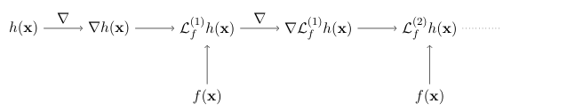
-
\( \CBCr(\bfx, \bfu) \) is not a GP
\( \E[\CBCr](\bfx, \bfu) \) is still affine in \( \bfu \).
\( \Var[\CBCr](\bfx, \bfx'; \bfu) \) is still quadratic in \( \bfu \). - For \( r \ge 3 \), \(\CBCr\) statistics can be estimated by Monte-carlo methods.
Safe controller using ECBF
- \begin{align} \min_{\bfu_k \in \mathcal{U}}& \|\bfR(\bfx) (\bfu_k - \pi_\epsilon(\bfx_k) \|_2^2 \\ \qquad\text{s.t.}&~~ \bbP\bigl( \CBCr(\bfx_k, \bfu_k) > \zeta \mid \bfx_k,\bfu_k \bigr) \ge 1-\epsilon \end{align}
- Using Cantelli's (Chebyshev's one-sided) inequality
- Safe controller (an SOCP) \begin{align} \min_{\bfu_k \in \mathcal{U}}& \|\bfR(\bfx) (\bfu_k - \pi_\epsilon(\bfx_k) \|_2^2 \\ \qquad\text{s.t.}\qquad &\E[\mbox{CBC}_k^{(r)}]-\zeta \ge \sqrt{\frac{1-\epsilon}{\epsilon}\Var[\mbox{CBC}_k^{(r)}]} \end{align}
Safe controller using ECBF Experiments
- \begin{align} \begin{bmatrix} \dot{\theta} \\ \dot{\omega} \end{bmatrix} = \underbrace{\begin{bmatrix} \omega \\ -\frac{g}{l} \sin(\theta) \end{bmatrix}}_{f(\bfx)} + \underbrace{\begin{bmatrix} 0 \\ \frac{1}{ml} \end{bmatrix}}_{g(\bfx)} u \end{align}
- \begin{align} h\left(\begin{bmatrix} \theta \\ \omega \end{bmatrix} \right) = \cos(\Delta_{col}) - \cos(\theta - \theta_c) \end{align}
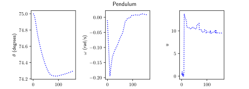
Ackerman Drive Simulations


Ackerman Drive Simulations


2022 upgrade: Learning \( h(\bfx) \)
| 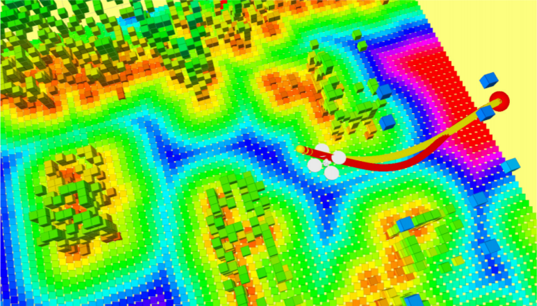 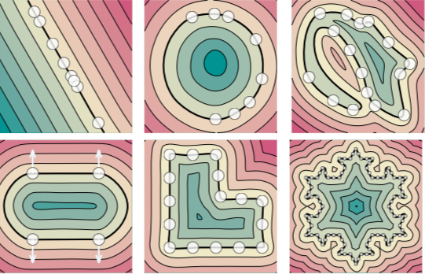 |
| 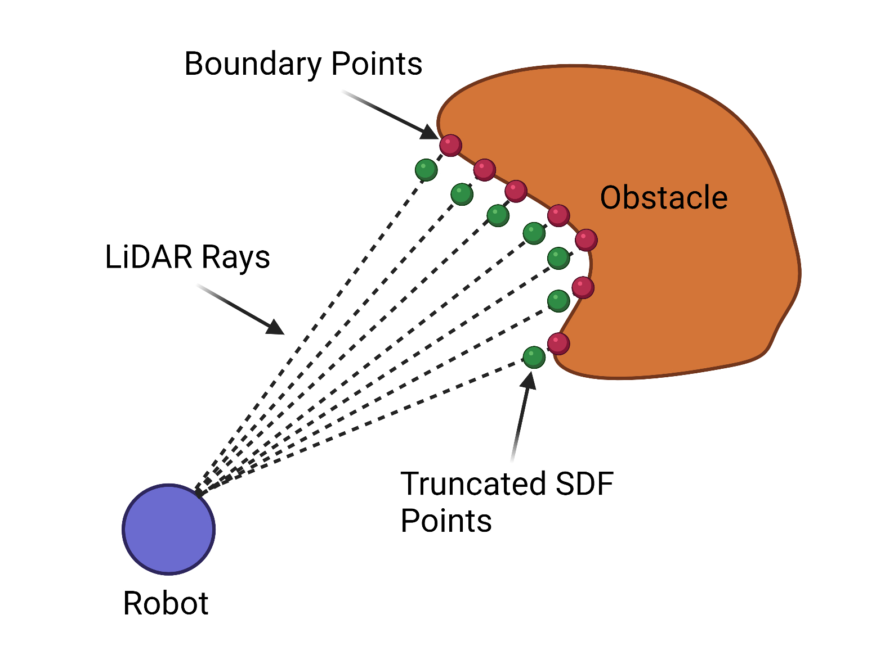 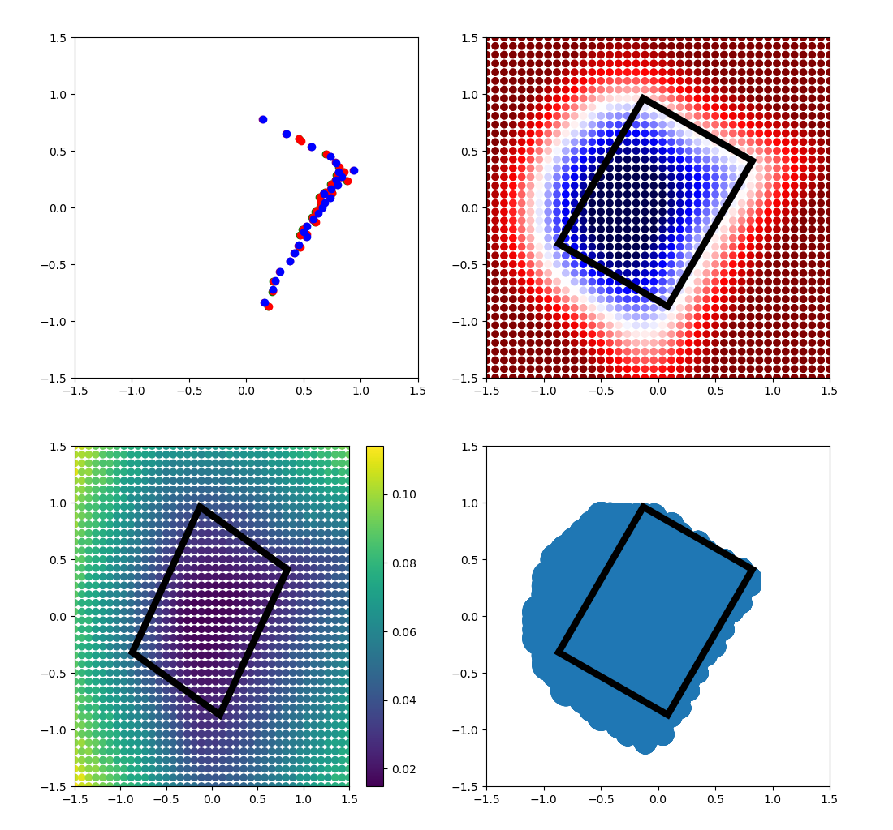 |
Better math
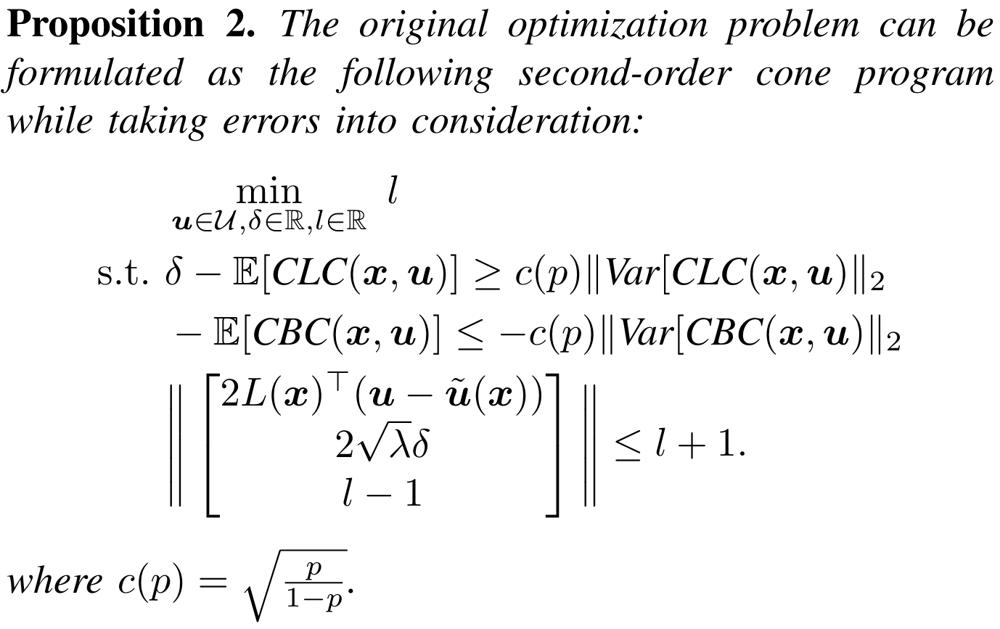Better Simulation: PyBullet
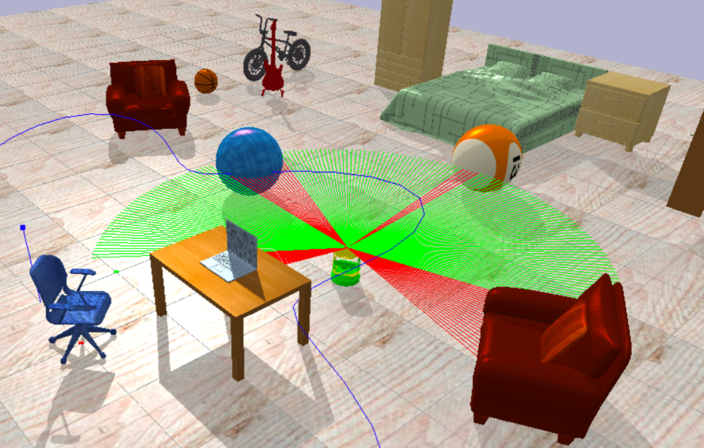Results
| 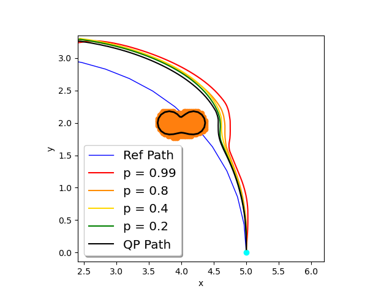 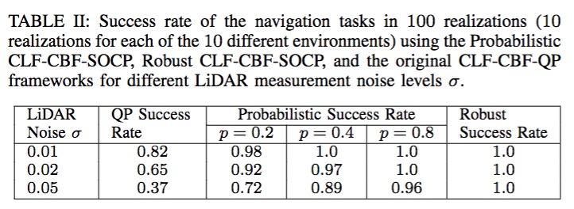 |
Sample trajectories
| 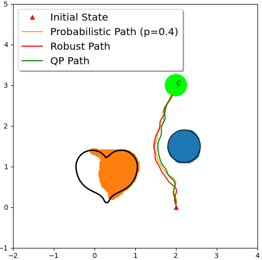 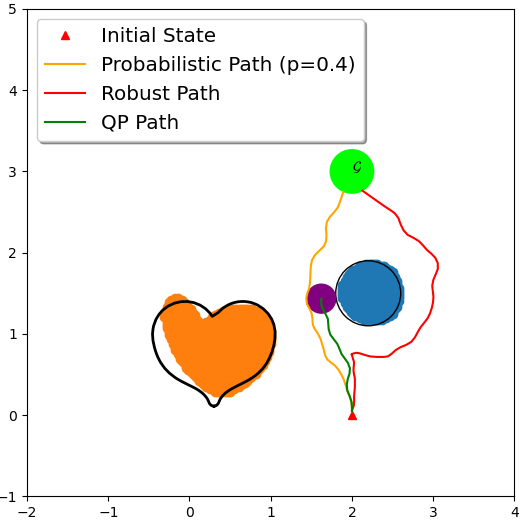 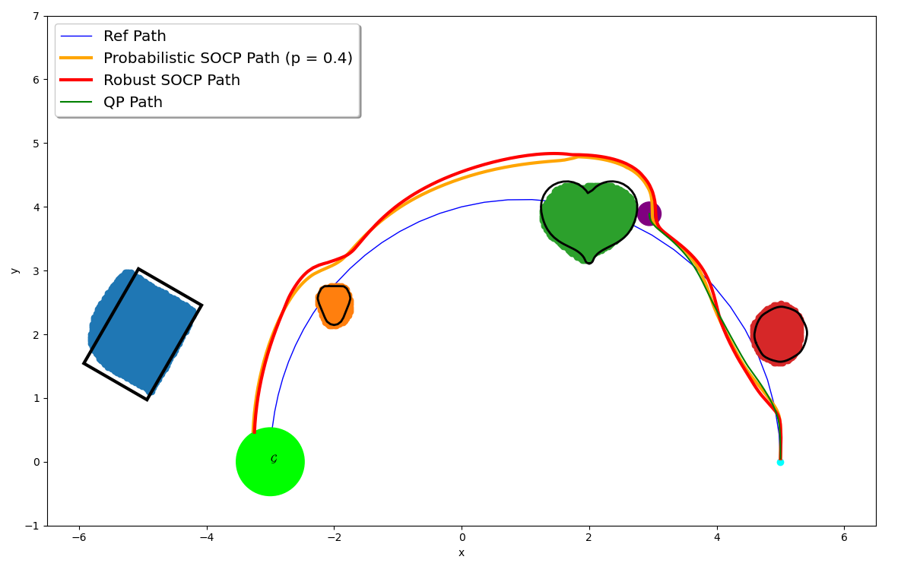 |
Take away
- Bayesian learning enables uncertainty-awareness
- Uncertainty-aware controller can be formulated as SOCP controller
Future work
Other work
Visual Inertial Odometry
Mutual Localization
Learning from Interventions
Continuous occlusion modeling
Other work
OrcVIO
Mutual Localization
Semantic Inverse RL
Learning from Interventions
Future work
Collaborators